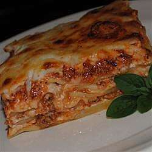

Lasagna

One of the best lasagnas including restaurants! Great with a ceaser salad and garlic bread!
- 1 (16 ounce) package of lasagna noodles
- 1 pound of lean ground beef
- 3 (15 ounce) cans of tomato sauce
- 1 (6 ounce) can tomato paste
- 2 teaspoons garlic salt
- 5 tablespoons Italian seasoning
- 1 pint part-skim ricotta cheese
- 2 cups shredded mozzarella cheese
- In a large pot cook lasagna noodles in boiling salted water until al dente. Rinse with cool water. Drain.
- In large sauce pan cook ground beef. Drain excess grease. Combine tomato sauces and tomato paste with ground beef and simmer until bubbly. Add garlic salt and Italian seasoning and reduce heat to low simmer. Cook for 10 minutes.
- To asemble, in the bottom of a 13x9 inch baking dish spread a thin layer of sauce. Next, add a layer of noodles, ricotta cheese, sauce/ground beef mixture, and then grated mozzarella cheese. Repeat until baking dish is filled. Garnish top with additional shredded mozzarealla cheese.
- In a preheated 375 degree F oven bake for 30 minutes or until bubbly. Let stand for 15 minutes and serve.